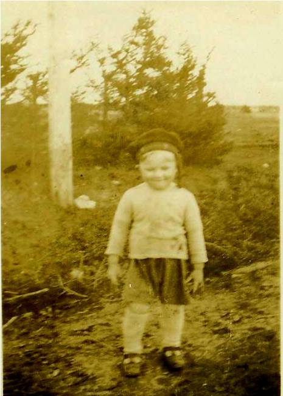

The Family Chronicle
No. 176 July 22, 2009
____________________________________________________________________

Undated photo of the Editor as a young man
(Little Branch River in background)
Black River in 1939
Readers may recall a couple of earlier Chronicles in which I listed in sequence all the households in Black River. On a recent trip to the Miramichi, I delivered a few copies of the completed document to relatives and presented a copy to the Chatham Library.
The Neighbourhood: Black River Bridge, New Brunswick circa 1939, is a 300 page volume listing all the households along the River. The list starts at the Little Branch Bridge travels around the Branch, down to Hexham, across the Victoria Bridge and up river to MacBeath's Bridge, then down the South side of the River, into Well’s Brook and on to the Little Branch Bridge.
For each family, I’ve listed the members of the household (although some of the
children had already left home), together with information about ancestors where that information was known to me. Although the list started during a conversation with brothers Ken and Norman, most of the information was gathered from church and cemetery records, family genealogy, newspapers of the day, and relatives and friends.
To the best of my knowledge, the information is accurate, however, I am sure there are errors; I’d be delighted to receive corrections to include in future copies.
Copies are available for $35.00 not including mailing costs. Anyone interested in a copy should contact me directly at don@glendenning.net or phone 902-892-5859.
Carolyn Dick) Haggart wrote:
“I
recently came
across your article on line and had to take a moment to
comment.
My name is Carolyn and I am the great niece of Stephen Dick
(Black
River). For what it is worth, his sister was an
artist. She painted an oil
painting of him just before he
left for overseas. When my father passed
away, that
painting came into my possession. It now hangs in the
Irvine
Museum in Irvine Alberta. Thank you for taking the
time to honor one of my
family members.
Sincerely
Carolyn
Haggart
Walsh, Alberta”
Carolyn
is the daughter of Eldon Dick and Opel Fraser.
Barry MacKenzie wrote:
“Further to our discussion from before Christmas, I found the following info in an email correspondence from several years ago. I know we have discussed the following facts before, but I thought Ernie's testimony would lend it even more credibility.
The email came to Janet Watling from Dianne Mullin of the Miramichi Branch of the NBGS, and contained reference to Ernie MacLean's (God rest him) knowledge of the Baptist Church in BRB. This is the quote from her email:
"He [Ernie] confirmed there was a burial ground there [behind the present Presbyterian Church]. He explained this property was bought by Donald McLean, Simon MacDonald and another gentleman (he couldn't remember his name) and it belonged to the Baptist[s] first. They had a small church; for some reason it was dissolved and the building was moved across the road and became the home of Robert "Big Bob" McLean. It is now used as a storage shed at John Glendennings.
"He also conveyed that Jack Gibson sold the property to the Presbyterians. Someone tried to search this land transaction but could not confirm that Jack owned it in the first place. Ernie said Bob McLean had many children who all tied [died] young and he wonders if they are buried there."
Another John Glendinning
Thanks to Kelli Morton, I found another entry in the family Bible in possession of Norman Glendenning – an entry, I should add, that had completely escaped me. The family Bible had belonged to my Great
Grandfather, John Glendinning (1807 – 1877). While quite faint in places, as best I can decipher, it reads:
“In Memory of John Gl(endinning?)
Who Died at Calester Hall (Parish of?) Middlbie, Dumfriesshire…
April the 14th, 1830
Aged 75
At age 75 in 1830, this John would have been born in 1755 and could have been my Great Great Great Grandfather thus extending my family one generation earlier; if so the lineage would be:
John Glendinning 1755-1830
John Glendinning 1772- m Mary Rae
John Glendinning 1807-1877 m Margaret Harley
Walter Glendenning 1845-1908 m Elizabeth Peters
Elmer Glendenning 1875-1938 m Jane Watling
Donald Glendenning 1929- m Carol Chesney
Again, I want to stress that this is not a proven connection yet; I do plan, however, to contact some Glendinnings in Scotland and England in the hopes of proving or disproving the connection. It is some 60 years since I copied the first entry from the family Bible; the lesson to be learned is that one should revisit original sources from time to time.
NOTE: If others have remembrances of D-Day, I’d be delighted to print them.
The Family Chronicle (Copyright) is an occasional newsletter published by Don Glendenning and posted on the family website. It is intended to share information about my family, community and the times in which I grew up. While every effort is made to be accurate, errors are likely to occur. Comments, enquiries and information may be sent to 62 Queen Elizabeth Drive, Charlottetown, PEI, C1A 3A9. Tel: 902 892 5859. Email: don@glendenning.net Web: www.glendenning.net/don